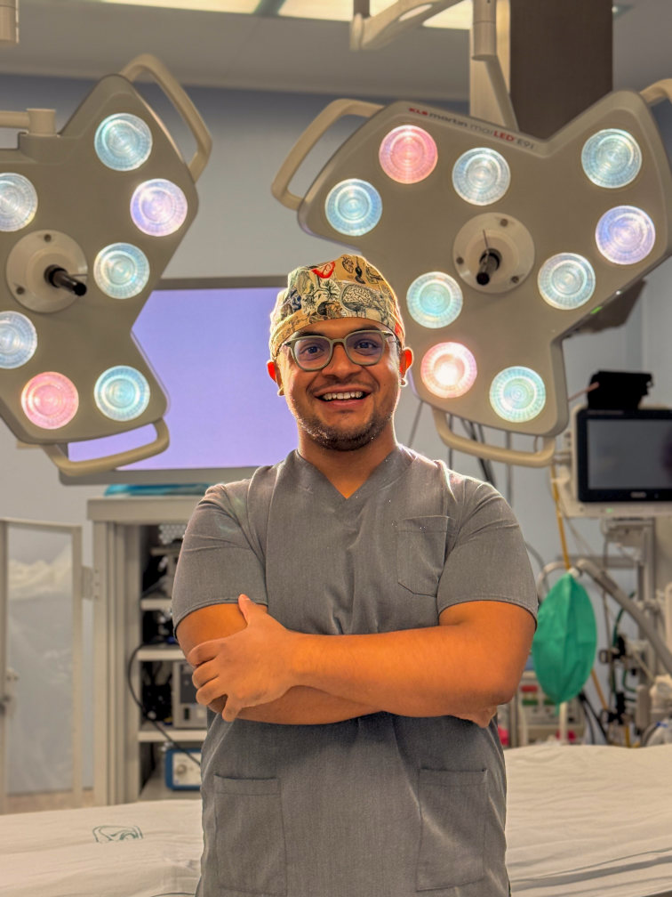
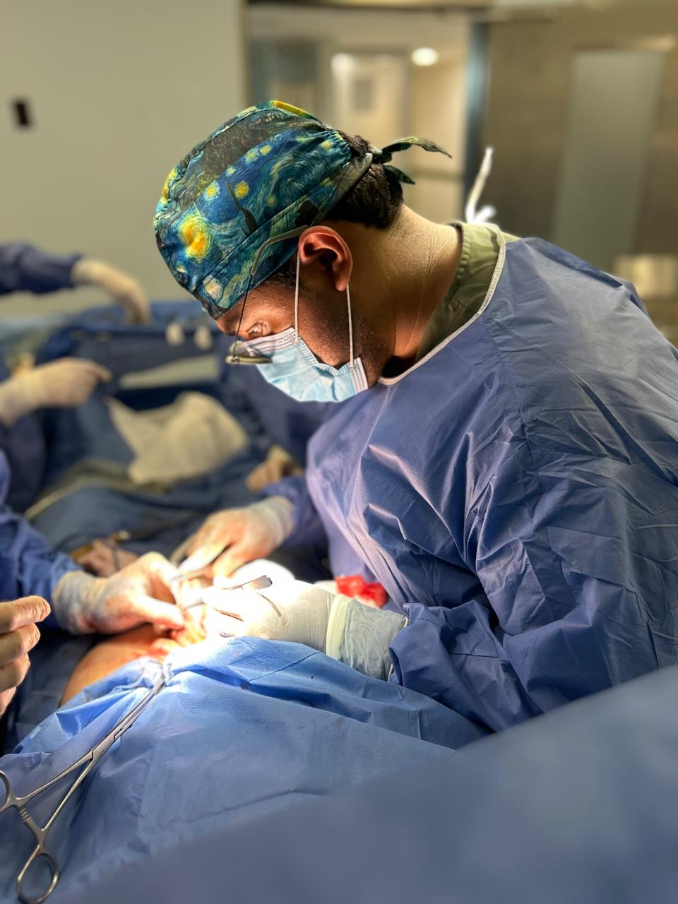
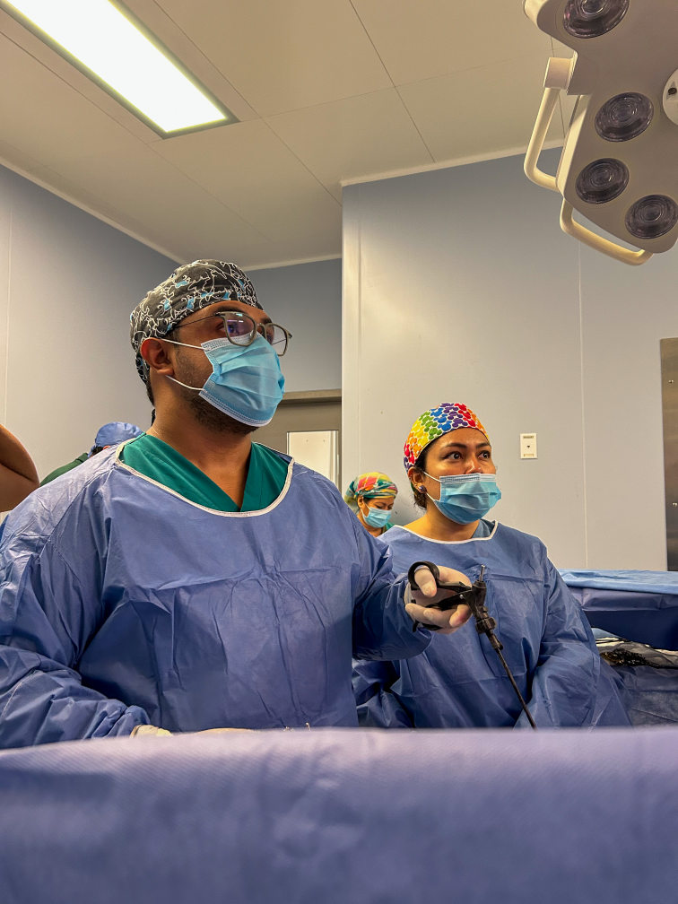
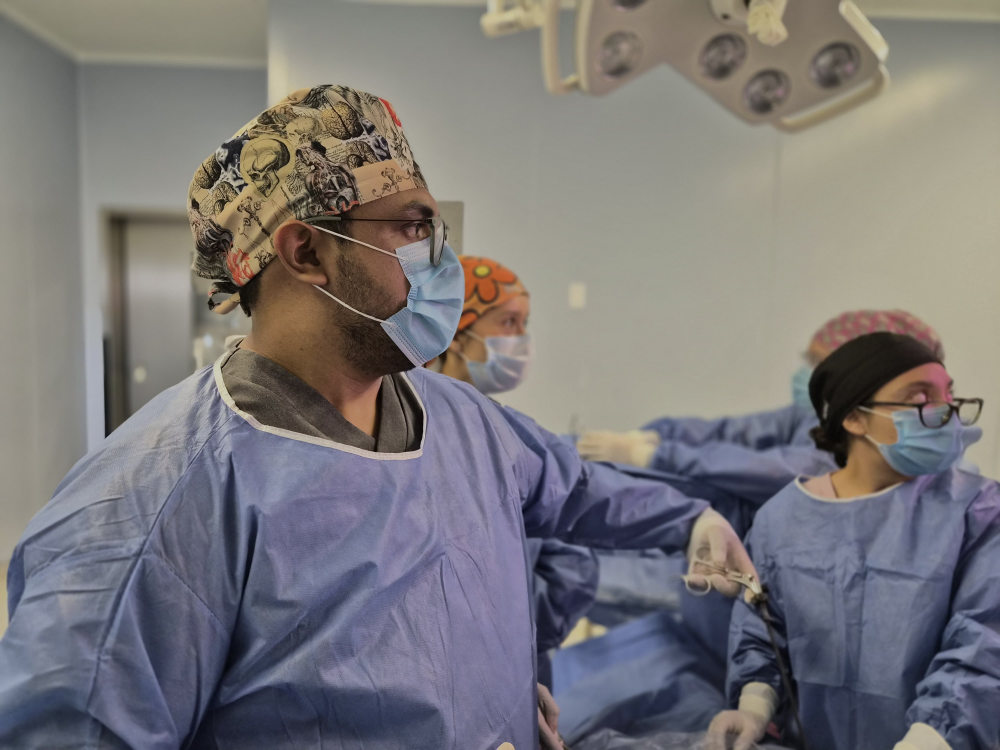
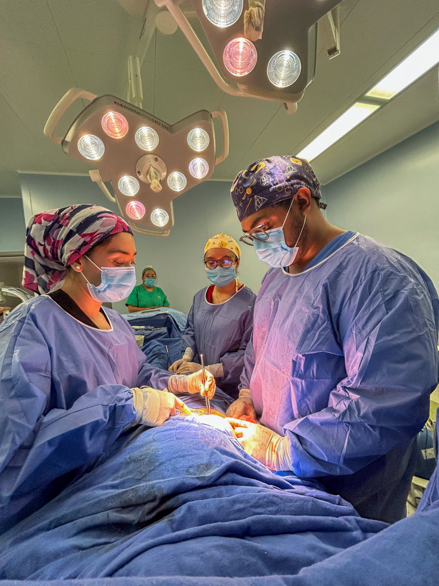
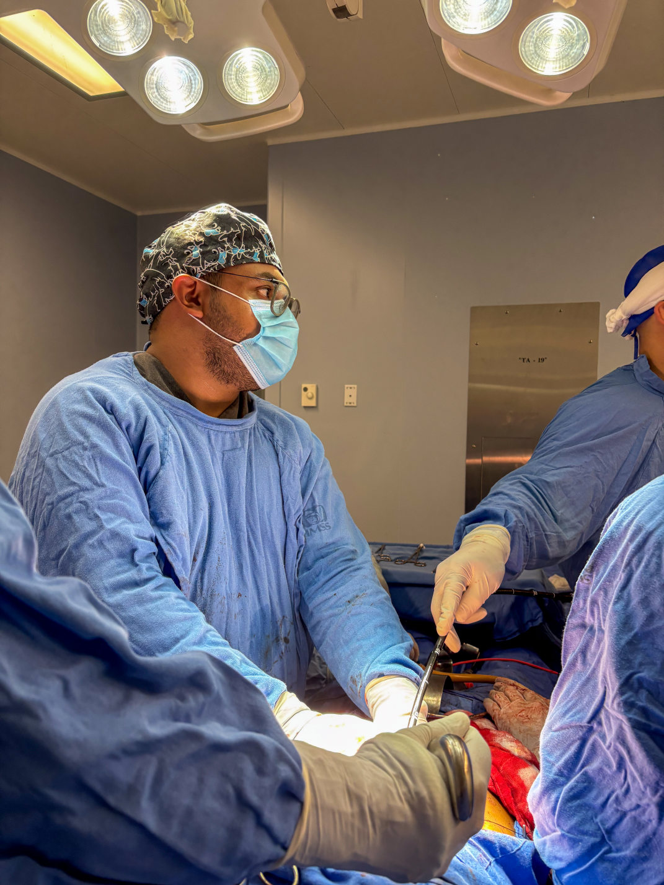
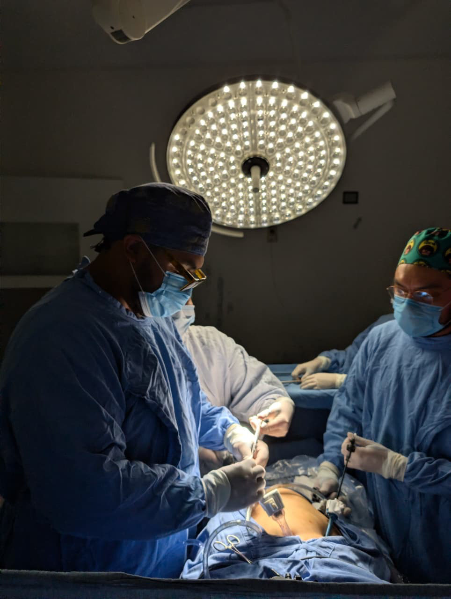
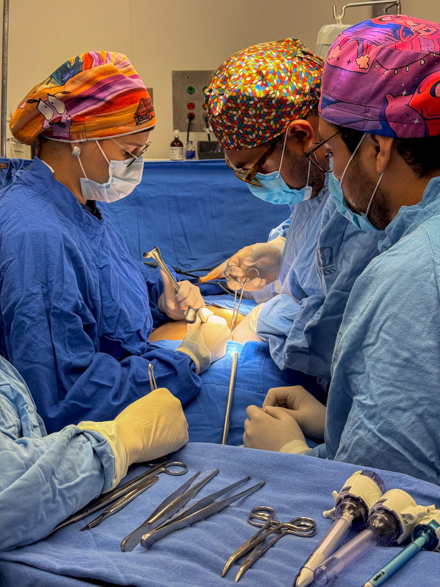
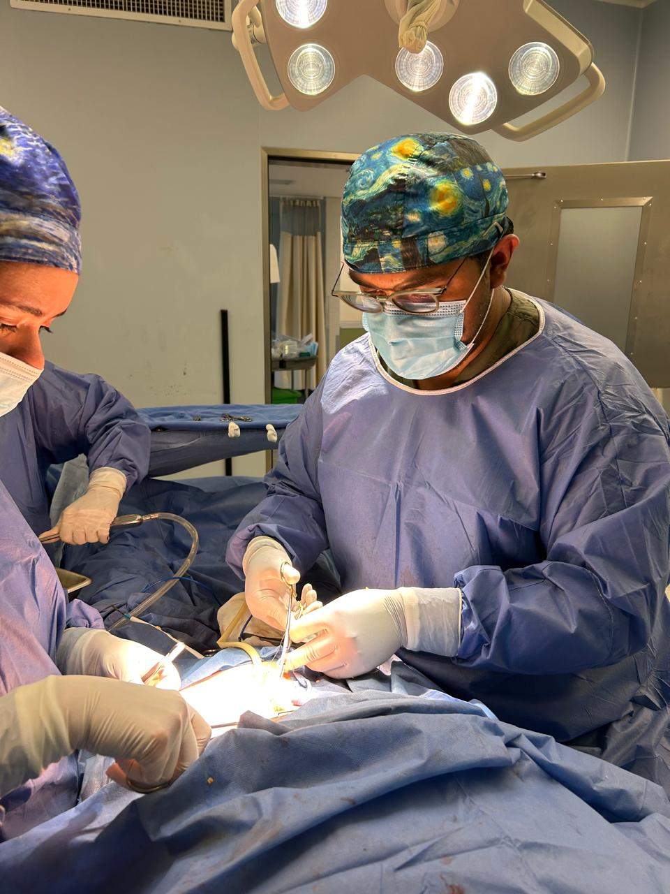

Atención quirúrgica de alta especialidad con técnicas mínimamente invasivas: menos dolor, recuperación más rápida y un trato humano de principio a fin.

El Dr. Jorge se especializa en resolver padecimientos del sistema digestivo mediante cirugía laparoscópica: incisiones pequeñas, menor dolor y un regreso más pronto a tu vida diaria.

Cirugía mínimamente invasivaTe explicamos tu padecimiento y las opciones reales de tratamiento, sin tecnicismos y sin presiones.
Procedimientos por mínima incisión que reducen el riesgo, el dolor y el tiempo de hospitalización.
Acompañamiento durante toda tu recuperación para que sanes con tranquilidad y confianza.
Algunos de los padecimientos que trato con mayor frecuencia. Si tu caso no aparece aquí, escríbeme y lo valoramos.
Cirugía laparoscópica de cálculos y colecistitis (extirpación de vesícula) con recuperación rápida.
Reparación de hernias inguinales, umbilicales y de pared abdominal con malla y técnica mínimamente invasiva.
Tratamiento quirúrgico del reflujo gastroesofágico cuando los medicamentos ya no son suficientes.
Apendicectomía laparoscópica de urgencia, con atención oportuna para evitar complicaciones.
Padecimientos de estómago, intestino y colon que requieren manejo quirúrgico especializado.
¿No sabes si necesitas cirugía? Agenda una consulta y recibe una segunda opinión confiable.
Años dedicados a la cirugía gastrointestinal y laparoscópica con resultados que respaldan cada decisión.*
Equipo laparoscópico de última generación para procedimientos más precisos y seguros.
Resuelvo tus dudas con calma y honestidad. Aquí no eres un número, eres una persona.
Disponibilidad para urgencias quirúrgicas y citas con tiempos de espera cortos.

Tecnología de vanguardiaEstoy para ayudarte. Escríbeme por WhatsApp, llámame o déjame tus datos y yo te contacto. Resolvemos tu caso con la atención que mereces.
Imágenes reales de mi labor en quirófano. Experiencia, equipo y tecnología al servicio de tu salud.






Cuéntame tu caso por WhatsApp o teléfono. Te oriento sobre el siguiente paso sin compromiso.
Revisamos tus estudios y tu historia clínica para definir el mejor tratamiento para ti.
Si requieres cirugía, te acompaño antes, durante y después de tu recuperación.
Testimonios de ejemplo — se reemplazarán por reseñas reales de pacientes.
"Me explicó todo con calma y la operación de vesícula salió perfecta. En pocos días ya estaba haciendo mi vida normal."
"Llegué con mucho miedo a operarme y el Dr. Jorge me dio toda la confianza. Hoy estoy recuperado y muy agradecido."
"Atención de primera, desde la consulta hasta el alta. Se nota que de verdad le importa el paciente."
"Muy profesional y humano. Me dio confianza desde la primera consulta y el seguimiento fue excelente."
"La cirugía fue mínimamente invasiva y casi no tuve dolor. Volví a trabajar mucho antes de lo que esperaba."
"Resolvió todas mis dudas sin prisas y con honestidad. Recomiendo al Dr. Jorge con los ojos cerrados."
"Por fin alguien que me escuchó. La cirugía laparoscópica fue rápida y casi no tuve dolor. 100% recomendado."
"Excelente cirujano. Mi recuperación fue mucho más rápida de lo que imaginaba. Gracias por todo, doctor."
"Trato cercano y resultados que hablan por sí solos. Mi familia entera ya lo recomienda."